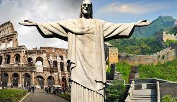
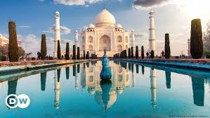
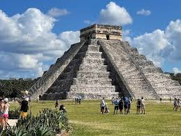
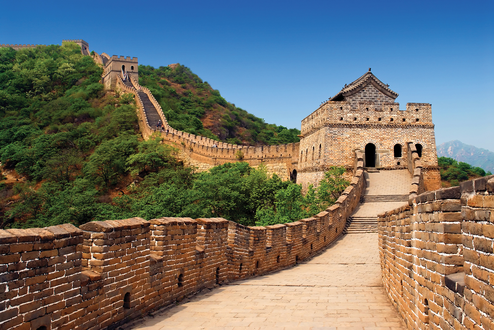
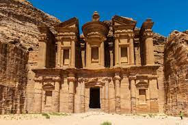

WONDERS OF WORLD

Christ the Redeemer
The totemic statue of Christ the Redeemer stands over Rio de Janeiro on the top of Mount Corcovado. At 30
meters tall, this monument is an iconic emblem of Brazil. This huge public artwork was designed by the
Polish-French sculptor Paul Landowski in the 1920s

The Colosseum
The Colosseum is the great oval amphitheater in the center of Rome where gladiators once fought for their
life. The largest amphitheater ever built, it was constructed from sand and stone over eight years, from
AD72 to AD80. The colossal structure could hold 80,000 spectators, arranged in a circular ring around the
central stage

Taj Mahal
The Taj Mahal was commissioned by Shah Jahan in 1631, to be built in the memory of his wife Mumtaz Mahal, who
died on 17 June that year, while giving birth to their 14th child, Gauhara Begum.[14][15] Construction
started in 1632,[16] and the mausoleum was completed in 1648, while the surrounding buildings and garden
were finished five years later.

Chichén Itzá
Deep in the Mexican state of Yucatán lies Chichen Itza, a historic Mayan city built between the 9th and 12th
centuries. Constructed by the pre-Columbian Mayan tribe Itzá, the city includes a series of monuments and
temples. The most celebrated is El Castillo, also known as the Temple of Kukulcan.

Machu Picchu
Machu Picchu is a lost treasure of the 15th century, a rare citadel discovered high in the Andes mountains
above the Peruvian Sacred Valley. Astonishingly, it is one of the only pre-Columbian ruins found nearly
intact, featuring evidence of former plazas, temples, agricultural terraces and homes.

Great Wall of China
The Great Wall of China is a huge barrier that spans thousands of miles along China’s historic northern
border. Created over millennia, the wall began its life as a series of smaller walls dating back to the 7th
century BCE, built as protective barriers against nomadic raids.

Petra
Petra, the ancient city in southern Jordan, is also known as the ‘rose city’ for its golden hue. It dates as
far back as 312 BC. Set in a remote valley, this ancient city was founded by the Arab Nabataeans, a
sophisticated civilization that carved stunning architecture and complex waterways out of surrounding rock
faces